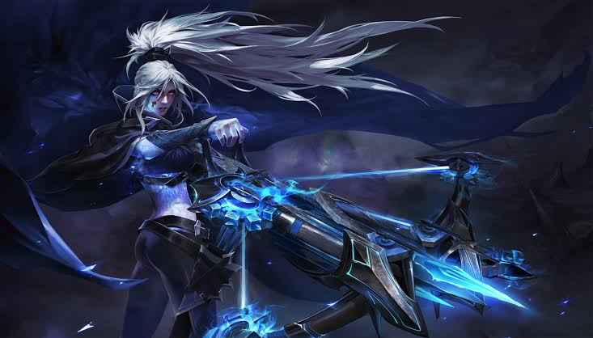

A Journey Through Radiant and Dire
Dota 2 is not just a game; it's a lifestyle. From the intense strategy involved in drafting the perfect team composition to the adrenaline rush of executing a perfectly timed Black Hole, every match is a story of its own.
"Dota 2 isn't about who plays harder; it's about who plays smarter."

The heroes of Dota 2, each with their unique abilities and personalities, bring a sense of variety that keeps the game fresh even after thousands of hours of playtime. Whether it's dominating the mid-lane as Invoker or supporting your team as Crystal Maiden, there's always something new to learn.
"Each hero is a canvas, and every game is an artwork of strategy and skill."

However, Dota 2 isn't for the faint of heart. The game's steep learning curve has often been a double-edged sword. While it's a rewarding challenge for those who persevere, many new players find the complexity overwhelming. With over 120 heroes, countless items, and intricate mechanics like creep aggro and map control, mastering the basics can feel like scaling a mountain.
"Dota 2's complexity is both its greatest strength and its biggest barrier."

While Valve has made strides in improving the tutorial system, it remains inadequate compared to the depth of the game. Many newcomers quit before fully understanding what makes Dota 2 so special. This difficulty has contributed to the perception that Dota 2 is a "dead game"—one where the player base dwindles due to its intimidating nature.
"Dota 2's tutorial feels like handing someone a dictionary and expecting them to write poetry. It scratches the surface but misses the essence."

Adding to this perception are long queue times in certain regions and a noticeable decline in active player count compared to its peak years. The esports scene, while still vibrant, lacks the mainstream appeal it once had, leading some to question the game's longevity.
"Dota 2 isn't dying—it's evolving. Its true value lies in its dedicated community."

Those who stick with Dota 2 often discover a lifelong passion. The game rewards perseverance with moments of brilliance and camaraderie that are unparalleled in gaming. Amidst the toxicity, bonds are formed over late-night matches, friendships are forged in the chaos of a hard-fought game, and lessons in patience, humility, and perseverance emerge from the ashes of defeat. It may not be as accessible as newer titles, but it remains a shining example of depth and complexity in esports.
"Dota 2 may not be for everyone, but for those who embrace its challenges, it offers an experience like no other."

So, is Dota 2 truly a dead game? Far from it. It's a niche experience now, but one that continues to inspire devotion among its community. The joy of pulling off a perfect team fight or the satisfaction of outsmarting your opponent in a 60-minute epic ensures that Dota 2 will never truly fade away.
"In a world of casual games, Dota 2 stands tall as a testament to what gaming can achieve."
Despite its steep learning curve, outdated tutorial, and a dwindling player base, Dota 2 holds a special place in the hearts of its fans. Its flaws are undeniable, but they pale in comparison to the magic of a perfectly executed team fight, the thrill of a comeback, and the sense of mastery that comes with truly understanding its mechanics.
What makes Dota 2 truly remarkable is the journey it takes you on—every match is a test of strategy, patience, and perseverance. It’s not a game for everyone, but for those who stay, it becomes a second home.As for me I love Dota 2 because, despite its imperfections, it challenges me, surprises me, and keeps me coming back for more."